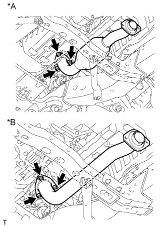
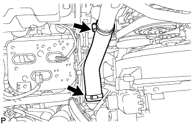
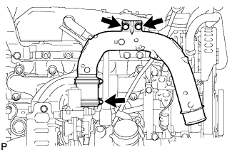
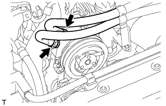
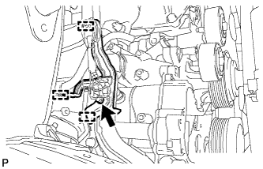
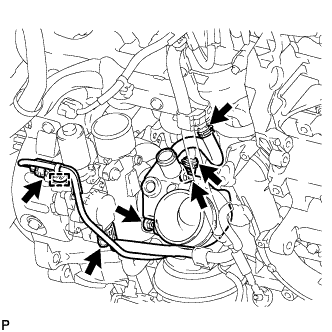
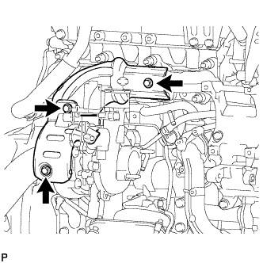
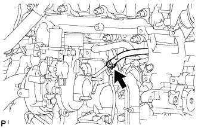

ВЫПУСКНОЙ КОЛЛЕКТОР С ТУРБОНАГНЕТАТЕЛЕМ (для моделей без DPF) > СНЯТИЕ |
| 1. ОТСОЕДИНИТЕ ПРОВОД ОТ ОТРИЦАТЕЛЬНОГО ВЫВОДА АККУМУЛЯТОРНОЙ БАТАРЕИ |
| 2. СНИМИТЕ НИЖНЮЮ ОБЛИЦОВКУ ПЕРЕДНЕГО БАМПЕРА |
Освободите фиксатор, выверните 5 болтов и снимите нижнюю накладку переднего бампера.
| 3. СНИМИТЕ ЗАЩИТУ КАРТЕРА ДВИГАТЕЛЯ № 1 В СБОРЕ |
Выверните 4 болта и снимите защиту картера двигателя № 1.
| 4. СЛЕЙТЕ ОХЛАЖДАЮЩУЮ ЖИДКОСТЬ ДВИГАТЕЛЯ |
Ослабьте пробку сливного крана радиатора.
 |
Слейте охлаждающую жидкость, сняв пробку расширительного бачка, а затем с помощью ключа снимите вентиляционную пробку.
Ослабьте пробку сливного крана блока цилиндров.

| *1 | Бачок радиатора | *2 | Вентиляционная пробка |
| *3 | Пробка сливного крана радиатора | *4 | Пробка сливного крана блока цилиндров |
| 5. СНИМИТЕ ПЕРЕДНЮЮ ВЫПУСКНУЮ ТРУБУ В СБОРЕ |
|  |
Отверните 3 гайки и снимите приемную трубу.
| *A | Для моделей с охладителем РОГ |
| *B | Для моделей без охладителя РОГ |
Снимите прокладку.
| 6. СНИМИТЕ УПЛОТНЕНИЕ ФАРТУКА ПРАВОГО ПЕРЕДНЕГО КРЫЛА |
С помощью съемника фиксаторов снимите 4 фиксатора и уплотнение фартука правого переднего крыла.
| 7. СНИМИТЕ УПЛОТНЕНИЕ № 1 МЕЖДУ ФАРТУКОМ ПРАВОГО ПЕРЕДНЕГО КРЫЛА И РАМОЙ |
С помощью съемника фиксаторов освободите 5 фиксаторов и снимите уплотнение между фартуком правого переднего крыла и рамой № 1.
| 8. СНИМИТЕ ВЕРХНЕЕ УПЛОТНЕНИЕ КРОНШТЕЙНА РАДИАТОРА |
Освободите 13 фиксаторов и снимите верхнее уплотнение кронштейна радиатора.
| 9. СНИМИТЕ ПЕРЕДНИЙ КРОНШТЕЙН ОТОПИТЕЛЯ (для автомобилей, предназначенных для эксплуатации в холодном климате) |
 |
Выверните 2 болта и снимите передний кронштейн подогревателя.
| 10. СНИМИТЕ ПОЛИКЛИНОВОЙ РЕМЕНЬ ВЕНТИЛЯТОРА И ГЕНЕРАТОРА |
Поверните шкив натяжителя по часовой стрелке с помощью установочного болта шкива, чтобы ослабить натяжение ремня. Затем снимите поликлиновой ремень.
| 11. СНИМИТЕ ШЛАНГ ВОЗДУШНОГО ФИЛЬТРА № 1 |
 |
Ослабьте 2 зажима шланга и снимите шланг воздушного фильтра № 1.
| 12. СНИМИТЕ КРЫШКУ ВОЗДУШНОГО ФИЛЬТРА В СБОРЕ |
 |
За исключением моделей, предназначенных для эксплуатации в холодном климате:
Открепите 2 зажима и отсоедините разъем датчика массового расхода воздуха.
| *A | За исключением моделей, предназначенных для эксплуатации в холодном климате |
| *B | Для моделей, предназначенных для эксплуатации в холодном климате |
Для автомобилей, предназначенных для эксплуатации в холодном климате:
Открепите 3 зажима и отсоедините разъем датчика массового расхода воздуха.
Освободите 4 зажима и снимите крышку воздушного фильтра.
| 13. СНИМИТЕ ФИЛЬТРУЮЩИЙ ЭЛЕМЕНТ ВОЗДУШНОГО ФИЛЬТРА В СБОРЕ |
| 14. СНИМИТЕ КОРПУС ВОЗДУШНОГО ФИЛЬТРА В СБОРЕ |
 |
Выверните 3 болта и снимите корпус воздушного фильтра.
| 15. СНИМИТЕ ВОЗДУШНЫЙ ШЛАНГ № 1 |
|  |
Ослабьте 2 зажима.
Отсоедините воздушный шланг № 1 от впускного патрубка и промежуточного охладителя.
| 16. СНИМИТЕ ВЫХОДНОЙ ПАТРУБОК КОМПРЕССОРА |
 |
Отсоедините 3 зажима жгута проводов.
Выверните болт и снимите кронштейн жгута проводов.
|  |
Ослабьте зажим шланга, выверните 2 болта и снимите выходной коленчатый патрубок компрессора.
| 17. СНИМИТЕ ВЯЗКОСТНЫЙ ПОДОГРЕВАТЕЛЬ С ЭЛЕКТРОМАГНИТНОЙ МУФТОЙ В СБОРЕ (для автомобилей, предназначенных для эксплуатации в холодном климате) |
Отсоедините разъем вязкостного подогревателя.
|  |
Отсоедините перепускной шланг охлаждающей жидкости и шланг охлаждающей жидкости.
 |
Выверните 2 болта и снимите вязкостный подогреватель с электромагнитной муфтой.
| 18. СНИМИТЕ КРОНШТЕЙН ВЯЗКОСТНОГО ПОДОГРЕВАТЕЛЯ № 1 В СБОРЕ (для автомобилей, предназначенных для эксплуатации в холодном климате) |
 |
Выверните 4 болта и снимите кронштейн вязкостного подогревателя № 1.
| 19. ОТСОЕДИНИТЕ КОМПРЕССОР СИСТЕМЫ КОНДИЦИОНИРОВАНИЯ В СБОРЕ (для моделей с системой кондиционирования) |
 |
Отсоедините разъем компрессора.
Выверните 4 болта и отсоедините компрессор системы кондиционирования.
| 20. СНИМИТЕ ГЕНЕРАТОР В СБОРЕ |
 |
Отсоедините разъем генератора.
Снимите заглушку контакта.
Отверните гайку и отсоедините провод генератора.
Выверните 2 болта и снимите генератор.
| 21. СНИМИТЕ КРОНШТЕЙН ГЕНЕРАТОРА |
 |
Выверните болт и снимите кронштейн генератора.
| 22. СНИМИТЕ КРОНШТЕЙН КРЕПЛЕНИЯ КОМПРЕССОРА № 1 |
 |
Выверните 5 болтов и снимите кронштейн крепления компрессора № 1.
| 23. СНИМИТЕ ТРУБКУ ВЕНТИЛЯЦИИ КАРТЕРА |
 |
Выверните болт и отсоедините 2 шланга вентиляции картера и трубку вентиляции картера.
| 24. СНИМИТЕ ТРУБКУ ЩУПА ПРОВЕРКИ УРОВНЯ МАСЛА |
Снимите щуп проверки уровня моторного масла.
 |
Выверните 2 болта и снимите трубку щупа проверки уровня моторного масла.
Снимите с трубки щупа проверки уровня моторного масла кольцевое уплотнение.
| 25. СНИМИТЕ ВХОДНОЙ КОЛЕНЧАТЫЙ ПАТРУБОК КОМПРЕССОРА |
|  |
Отсоедините 3 зажима жгута проводов.
Выверните болт и снимите кронштейн жгута проводов.
|  |
Отсоедините 2 разъема и открепите зажим жгута проводов.
Отсоедините шланг охлаждающей жидкости турбины № 2 и шланг охлаждающей жидкости турбины № 3.
Отверните 2 гайки и снимите входной коленчатый патрубок компрессора и прокладку.
| 26. СНИМИТЕ ТЕПЛОЗАЩИТНЫЙ ЭКРАН ТУРБИНЫ № 1 |
|  |
Выверните 2 болта и снимите теплозащитный экран турбины № 1.
| 27. СНИМИТЕ ТЕПЛОЗАЩИТНЫЙ ЭКРАН ВЫПУСКНОГО КОЛЛЕКТОРА № 1 |
Выверните болт и снимите теплозащитный экран выпускного коллектора № 1.
| 28. ОТСОЕДИНИТЕ ШЛАНГ ОХЛАЖДАЮЩЕЙ ЖИДКОСТИ ТУРБИНЫ № 1 |
|  |
Отсоедините шланг охлаждающей жидкости турбины № 1 от патрубка охлаждающей жидкости турбины № 1.
| 29. СНИМИТЕ ВЫХОДНОЙ ПАТРУБОК ТУРБИНЫ |
 |
Отверните 3 гайки и снимите выходной патрубок турбины и прокладку.
| 30. СНИМИТЕ КРОНШТЕЙН ТУРБОНАГНЕТАТЕЛЯ |
 |
Выверните 2 болта, отверните гайку и снимите опору турбонагнетателя.
| 31. СНИМИТЕ ТРУБКУ ПОДВОДА МАСЛА К ТУРБИНЕ В СБОРЕ |
 |
Выверните 2 болта, отверните 2 гайки, выверните пустотелый соединительный болт-штуцер и снимите трубку подвода масла к турбине и 3 прокладки.
| 32. СНИМИТЕ ВЫПУСКНОЙ КОЛЛЕКТОР С ТУРБОНАГНЕТАТЕЛЕМ В СБОРЕ |
 |
Отверните 8 гаек и снимите 8 плоских шайб и 8 колец с выпускного коллектора.
Снимите выпускной коллектор с турбонагнетателем и прокладку.
| 33. СНИМИТЕ ТУРБОНАГНЕТАТЕЛЬ |
 |
Отверните 3 гайки и снимите турбонагнетатель и прокладку.
| 34. СНИМИТЕ ПАТРУБОК ОХЛАЖДАЮЩЕЙ ЖИДКОСТИ ТУРБИНЫ № 1 |
Отверните 2 гайки, выверните болт и снимите патрубок охлаждающей жидкости турбины № 1 и прокладку.